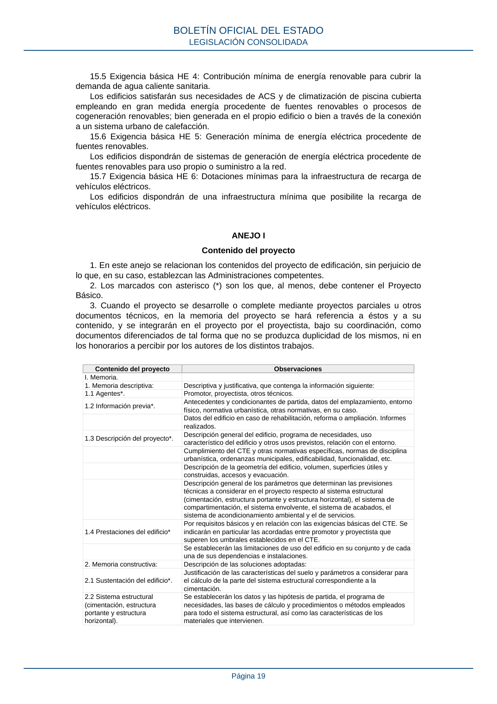
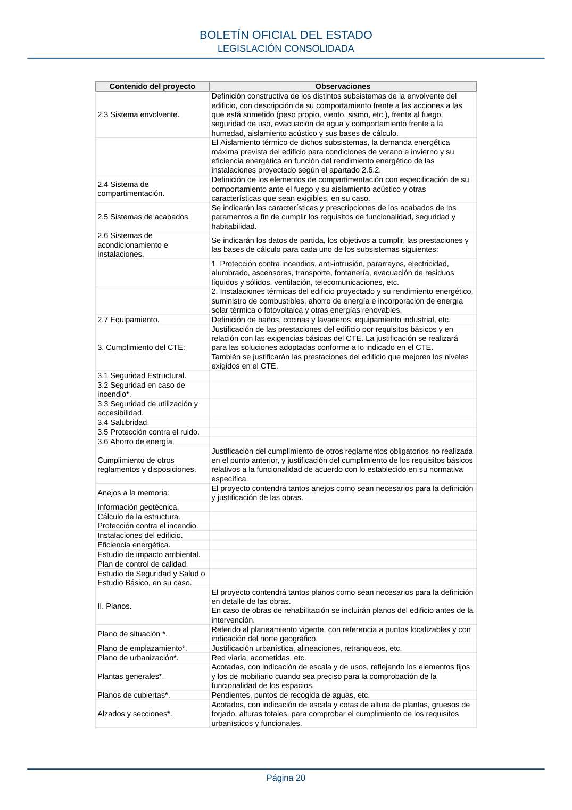
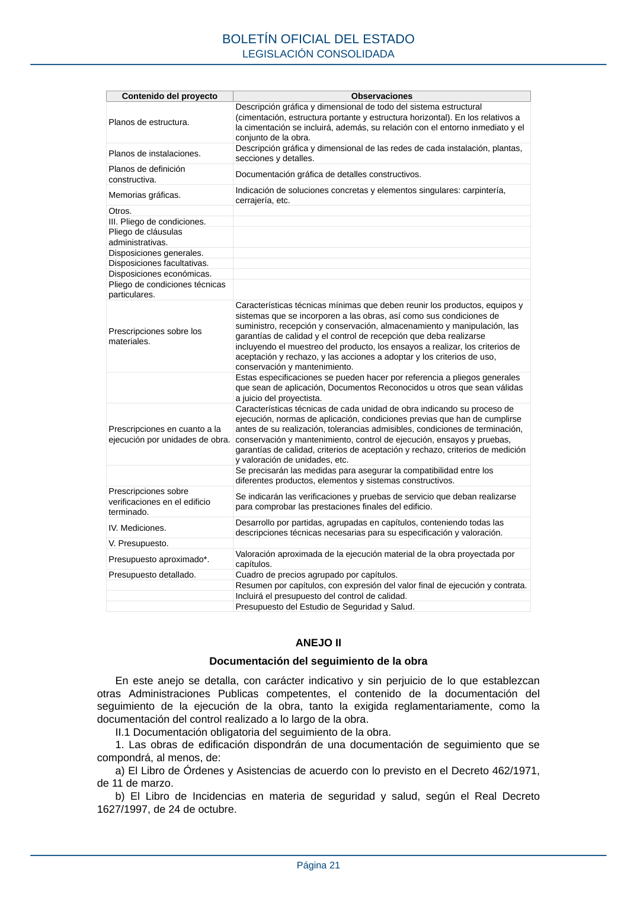

RD-314-2006 · Fragmento de PDF p19 · versión 2022-06-15 · capa oficial
Formatos: JSON compacto · Markdown · PDF fuente
Ámbito del documento · texto del ámbito · documento y tablas
ID técnico a0055 · PDF pág. 19-21 · jerarquía no validada por persona · no es capítulo: sin_linea_de_encabezado · padre: raíz · literal original en el contenido: «3. Cuando el proyecto se desarrolle o complete mediante proyectos parciales u otros»
3. Cuando el proyecto se desarrolle o complete mediante proyectos parciales u otros documentos técnicos, en la memoria del proyecto se hará referencia a éstos y a su contenido, y se integrarán en el proyecto por el proyectista, bajo su coordinación, como documentos diferenciados de tal forma que no se produzca duplicidad de los mismos, ni en los honorarios a percibir por los autores de los distintos trabajos. Contenido del proyecto Observaciones I. Memoria. 1. Memoria descriptiva: Descriptiva y justificativa, que contenga la información siguiente: 1.1 Agentes*. Promotor, proyectista, otros técnicos. 1.2 Información previa*. Antecedentes y condicionantes de partida, datos del emplazamiento, entorno físico, normativa urbanística, otras normativas, en su caso. Datos del edificio en caso de rehabilitación, reforma o ampliación. Informes realizados. 1.3 Descripción del proyecto*. Descripción general del edificio, programa de necesidades, uso característico del edificio y otros usos previstos, relación con el entorno. Cumplimiento del CTE y otras normativas específicas, normas de disciplina urbanística, ordenanzas municipales, edificabilidad, funcionalidad, etc. Descripción de la geometría del edificio, volumen, superficies útiles y construidas, accesos y evacuación. Descripción general de los parámetros que determinan las previsiones técnicas a considerar en el proyecto respecto al sistema estructural (cimentación, estructura portante y estructura horizontal), el sistema de compartimentación, el sistema envolvente, el sistema de acabados, el sistema de acondicionamiento ambiental y el de servicios. 1.4 Prestaciones del edificio* Por requisitos básicos y en relación con las exigencias básicas del CTE. Se indicarán en particular las acordadas entre promotor y proyectista que superen los umbrales establecidos en el CTE. Se establecerán las limitaciones de uso del edificio en su conjunto y de cada una de sus dependencias e instalaciones. 2. Memoria constructiva: Descripción de las soluciones adoptadas: 2.1 Sustentación del edificio*. Justificación de las características del suelo y parámetros a considerar para el cálculo de la parte del sistema estructural correspondiente a la cimentación. 2.2 Sistema estructural (cimentación, estructura portante y estructura horizontal). Se establecerán los datos y las hipótesis de partida, el programa de necesidades, las bases de cálculo y procedimientos o métodos empleados para todo el sistema estructural, así como las características de los materiales que intervienen. BOLETÍN OFICIAL DEL ESTADO LEGISLACIÓN CONSOLIDADA Página 19 Contenido del proyecto Observaciones 2.3 Sistema envolvente. Definición constructiva de los distintos subsistemas de la envolvente del edificio, con descripción de su comportamiento frente a las acciones a las que está sometido (peso propio, viento, sismo, etc.), frente al fuego, seguridad de uso, evacuación de agua y comportamiento frente a la humedad, aislamiento acústico y sus bases de cálculo. El Aislamiento térmico de dichos subsistemas, la demanda energética máxima prevista del edificio para condiciones de verano e invierno y su eficiencia energética en función del rendimiento energético de las instalaciones proyectado según el apartado 2.6.2. 2.4 Sistema de compartimentación. Definición de los elementos de compartimentación con especificación de su comportamiento ante el fuego y su aislamiento acústico y otras características que sean exigibles, en su caso. 2.5 Sistemas de acabados. Se indicarán las características y prescripciones de los acabados de los paramentos a fin de cumplir los requisitos de funcionalidad, seguridad y habitabilidad. 2.6 Sistemas de acondicionamiento e instalaciones. Se indicarán los datos de partida, los objetivos a cumplir, las prestaciones y las bases de cálculo para cada uno de los subsistemas siguientes: 1. Protección contra incendios, anti-intrusión, pararrayos, electricidad, alumbrado, ascensores, transporte, fontanería, evacuación de residuos líquidos y sólidos, ventilación, telecomunicaciones, etc. 2. Instalaciones térmicas del edificio proyectado y su rendimiento energético, suministro de combustibles, ahorro de energía e incorporación de energía solar térmica o fotovoltaica y otras energías renovables. 2.7 Equipamiento. Definición de baños, cocinas y lavaderos, equipamiento industrial, etc. 3. Cumplimiento del CTE: Justificación de las prestaciones del edificio por requisitos básicos y en relación con las exigencias básicas del CTE. La justificación se realizará para las soluciones adoptadas conforme a lo indicado en el CTE. También se justificarán las prestaciones del edificio que mejoren los niveles exigidos en el CTE. 3.1 Seguridad Estructural. 3.2 Seguridad en caso de incendio*. 3.3 Seguridad de utilización y accesibilidad. 3.4 Salubridad. 3.5 Protección contra el ruido. 3.6 Ahorro de energía. Cumplimiento de otros reglamentos y disposiciones. Justificación del cumplimiento de otros reglamentos obligatorios no realizada en el punto anterior, y justificación del cumplimiento de los requisitos básicos relativos a la funcionalidad de acuerdo con lo establecido en su normativa específica. Anejos a la memoria: El proyecto contendrá tantos anejos como sean necesarios para la definición y justificación de las obras. Información geotécnica. Cálculo de la estructura. Protección contra el incendio. Instalaciones del edificio. Eficiencia energética. Estudio de impacto ambiental. Plan de control de calidad. Estudio de Seguridad y Salud o Estudio Básico, en su caso. II. Planos. El proyecto contendrá tantos planos como sean necesarios para la definición en detalle de las obras. En caso de obras de rehabilitación se incluirán planos del edificio antes de la intervención. Plano de situación *. Referido al planeamiento vigente, con referencia a puntos localizables y con indicación del norte geográfico. Plano de emplazamiento*. Justificación urbanística, alineaciones, retranqueos, etc. Plano de urbanización*. Red viaria, acometidas, etc. Plantas generales*. Acotadas, con indicación de escala y de usos, reflejando los elementos fijos y los de mobiliario cuando sea preciso para la comprobación de la funcionalidad de los espacios. Planos de cubiertas*. Pendientes, puntos de recogida de aguas, etc. Alzados y secciones*. Acotados, con indicación de escala y cotas de altura de plantas, gruesos de forjado, alturas totales, para comprobar el cumplimiento de los requisitos urbanísticos y funcionales. BOLETÍN OFICIAL DEL ESTADO LEGISLACIÓN CONSOLIDADA Página 20 Contenido del proyecto Observaciones Planos de estructura. Descripción gráfica y dimensional de todo del sistema estructural (cimentación, estructura portante y estructura horizontal). En los relativos a la cimentación se incluirá, además, su relación con el entorno inmediato y el conjunto de la obra. Planos de instalaciones. Descripción gráfica y dimensional de las redes de cada instalación, plantas, secciones y detalles. Planos de definición constructiva. Documentación gráfica de detalles constructivos. Memorias gráficas. Indicación de soluciones concretas y elementos singulares: carpintería, cerrajería, etc. Otros. III. Pliego de condiciones. Pliego de cláusulas administrativas. Disposiciones generales. Disposiciones facultativas. Disposiciones económicas. Pliego de condiciones técnicas particulares. Prescripciones sobre los materiales. Características técnicas mínimas que deben reunir los productos, equipos y sistemas que se incorporen a las obras, así como sus condiciones de suministro, recepción y conservación, almacenamiento y manipulación, las garantías de calidad y el control de recepción que deba realizarse incluyendo el muestreo del producto, los ensayos a realizar, los criterios de aceptación y rechazo, y las acciones a adoptar y los criterios de uso, conservación y mantenimiento. Estas especificaciones se pueden hacer por referencia a pliegos generales que sean de aplicación, Documentos Reconocidos u otros que sean válidas a juicio del proyectista. Prescripciones en cuanto a la ejecución por unidades de obra. Características técnicas de cada unidad de obra indicando su proceso de ejecución, normas de aplicación, condiciones previas que han de cumplirse antes de su realización, tolerancias admisibles, condiciones de terminación, conservación y mantenimiento, control de ejecución, ensayos y pruebas, garantías de calidad, criterios de aceptación y rechazo, criterios de medición y valoración de unidades, etc. Se precisarán las medidas para asegurar la compatibilidad entre los diferentes productos, elementos y sistemas constructivos. Prescripciones sobre verificaciones en el edificio terminado. Se indicarán las verificaciones y pruebas de servicio que deban realizarse para comprobar las prestaciones finales del edificio. IV. Mediciones. Desarrollo por partidas, agrupadas en capítulos, conteniendo todas las descripciones técnicas necesarias para su especificación y valoración. V. Presupuesto. Presupuesto aproximado*. Valoración aproximada de la ejecución material de la obra proyectada por capítulos. Presupuesto detallado. Cuadro de precios agrupado por capítulos. Resumen por capítulos, con expresión del valor final de ejecución y contrata. Incluirá el presupuesto del control de calidad. Presupuesto del Estudio de Seguridad y Salud.



PDF fuente redistribuible: copia fiel enlazada en esta página (SHA256 verificado).